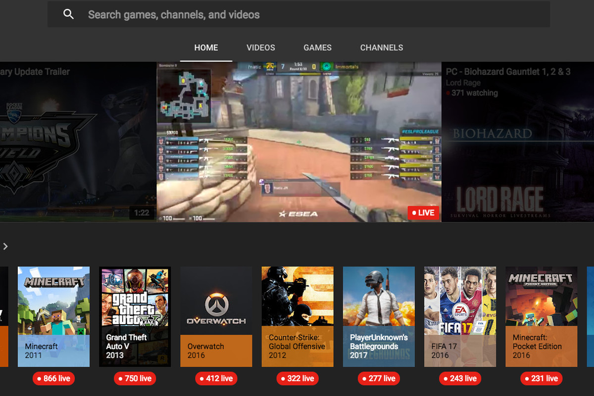
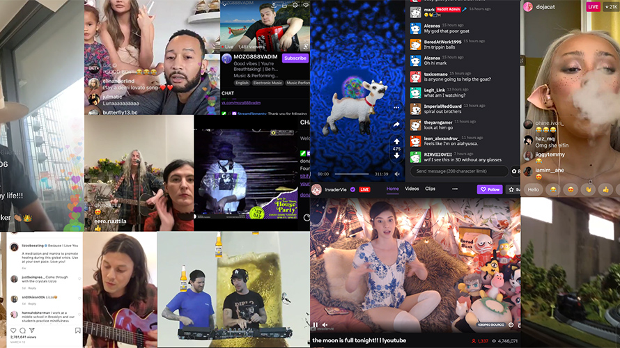

YouTube stars have recently become a staple of the entertainment industry, as millions of subscribers turn to easy, quick entertainment from the wide range of personalities on the internet. Gamers, in particular, have started to use YouTube as a platform to showcase their respective skills, comedic talents and personable attributes. We’ve seen Seth Abner (Scump) rise as a competitive gamer in OpTic Gaming and Felix Arvid Ulf Kjellberg (PewDiePie) star on Conan O’Brien’s Clueless Gamer series. These internet celebrities just get more and more powerful as technology and the Internet become more prominent in our lives.

In a diverse entertainment ecosystem where platforms jockey for a competitive edge, one area has seen impressive growth: live streaming. Live streaming has been around for years, quietly building momentum in the background. Today, the medium is poised to explode on a global scale, and the ripple effects will be felt throughout the entire entertainment landscape.
The success of live streaming is due, in part, to the unexpected events of 2020. As social distancing requirements curbed traditionally physical experiences, live streams gave audiences the ability to connect virtually. Indeed, with 99% year-over-year growth of hours watched and a 45% growth between March and April 2020, it’s clear that live streaming has flourished.
